Placing images
Loading and placing images on drawings
Luxor lets you place existing images on the drawing. You can place PNG, SVG, and EPS images. (JPEGs aren't supported.)
For PNG and SVG, first load the image and create a reference to it. For example:
- for PNG images, use
img = readpng(filename) - for SVG images, use
img = readsvg(filename)orimg = readsvg(string)
You can access this image's dimensions with img.width and img.height.
Use placeimage(img) to place the image by its top left corner at point pt. Use the centered=true keyword to place the image's center point there.
img = readpng("../assets/figures/julia-logo-mask.png")w = img.widthh = img.heightrulers()scale(0.3, 0.3)rotate(π/4)placeimage(img, Point(-w/2, -h/2), .5)sethue("red")circle(-w/2, -h/2, 15, :fill)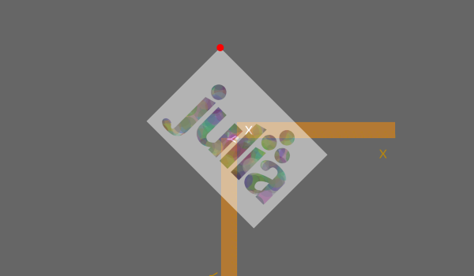
PNG images can be placed with varying opacity or transparency. For example, the image is placed with 0.5 opacity with:
placeimage(img, Point(100, 100), 0.5)SVG images do their own thing in terms of opacity.
readsvg also lets you supply raw (or pure) SVG code in a string.
You can use placeimage() to place an array of RGB or RGBA pixels on a drawing.
N = 500i = reshape([RGBA(rand(4)...) for p in 1:N^2], N, N)# i is Matrix{RGBA{Float64}}# (alias for Array{RGBA{Float64}, 2})@draw begin origin() sethue("orange") box(O, N/2, N/2, :fill) placeimage(i, O, centered=true, alpha=0.5)end 500 500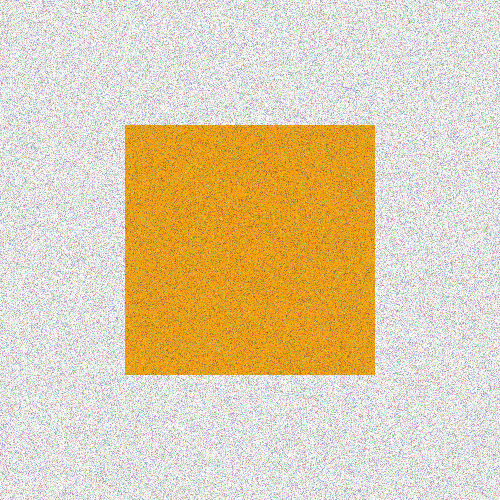
Or you can load an image as an array and place it on a drawing.
using Luxor, Colors, FileIOimg = load(dirname(dirname(pathof(Luxor))) * "/docs/src/assets/figures/42.png")@draw begin img[1:50, :] .= colorant"cyan" img[200:end, :] .= colorant"magenta" placeimage(img, O, centered=true, alpha=0.5)end 250 250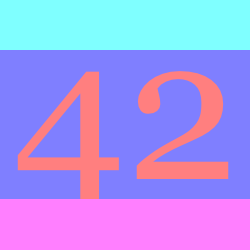
SVG images
To output a drawing as an SVG image, using the Drawing(... :svg) or specify an SVG filename. To obtain the SVG source of a completed SVG drawing, use svgstring.
For example, if you draw the Julia logo like this:
Drawing(500, 500, :svg)origin()julialogo()finish()s = svgstring()You'll get the SVG source code stored, as a string, in s. You can examine or process it further. For example, the five colors used for the logo were:
julia> eachmatch(r"rgb\\(.*?\\)", s) |> collect5-element Vector{RegexMatch}: RegexMatch("rgb(0%,0%,0%)") RegexMatch("rgb(79.6%,23.5%,20%)") RegexMatch("rgb(25.1%,38.8%,84.7%)") RegexMatch("rgb(58.4%,34.5%,69.8%)") RegexMatch("rgb(22%,59.6%,14.9%)")To display the image in a Jupyter or Pluto notebook, use the HTML function, or you can use the readsvg and placeimage functions in combination.
EPS images
EPS (Encapsulated PostScript) files created by Luxor (or any Cairo-based package) can be re-imported and placed on the current drawing with the placeeps function. This function converts the EPS commands to the equivalent Luxor commands and evaluates them immediately in the context of the current drawing.
This function is designed to extract just the coordinates of paths from an EPS file. An EPS file can contain much more information about an image than coordinates: there migth be image and pixel data, font data, linear color gradients, and so on. These are not translated into equivalent Luxor functions. This function interprets the EPS commands in a Cairo-generated EPS "Prolog"; EPS files created by other applications will likely not contain this Cairo-generated Prolog, and so won't be interpreted at all (or will go wrong in interesting ways).
In this example, an SVG file linnux.svg is placed and exported to an EPS file linux.eps, then this EPS file is imported and placed on a new SVG drawing using Luxor functions instead of EPS commands, respecting the current scale and orientation. Finally, when the SVG document is finished, the graphics will be in SVG format again.
using Luxorsvgfile = dirname(@__FILE__) * "../assets/figures/linux.svg"epsfile = dirname(@__FILE__) * "../assets/figures/linux.eps"@eps begin img = readsvg(svgfile) placeimage(img, centered = true)end 500 500 epsfile@drawsvg begin translate(midpoint(boxtopleft(), O)) scale(0.5) rotate(π/12) placeeps(epsfile) rulers()endIf you want to obtain the paths and coordinates for use elsewhere, you can use the log=true function, which sends the commands to the REPL as well:
placeeps("/tmp/linux.eps", log=true)# start EPS importgsave()setgray(1.0)move(Point(70.801, -6.0))line(Point(429.199, -6.0))curve(Point(471.617, -6.0), Point(506.0, 28.383), Point(506.0, 70.801))line(Point(506.0, 429.199))curve(Point(506.0, 471.617), Point(471.617, 506.0), Point(429.199, 506.0))line(Point(70.801, 506.0))curve(Point(28.383, 506.0), Point(-6.0, 471.617), Point(-6.0, 429.199))line(Point(-6.0, 70.801))curve(Point(-6.0, 28.383), Point(28.383, -6.0), Point(70.801, -6.0))closepath()move(Point(70.801, -6.0))fillpath()...Once you have a sequence of Luxor commands, you can edit them into new creations:
Placing an image matrix
You can use placeimage to put pixel images on a drawing.
This example uses noise to define the RGB values in a matrix of ARGB32 color values:
D = 600mat = [Luxor.ARGB32( noise(0.01r, 0.01c), noise(0.1r, 0.02c), noise(0.1r, 0.01c)) for r in 1:D ÷ 2, c in 1:D]@draw begin background("grey60") placeimage(mat, boxtopleft()) fontsize(80) sethue("white") setopacity(0.5) text("woah", halign=:center)end D D ÷ 2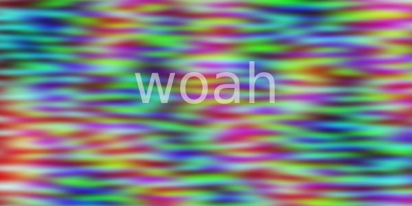
The next example saves vector graphics into an image matrix, then places that matrix at random on another drawing.
using Luxormat = @imagematrix begin juliacircles(6)end 40 40@draw begin for i in 1:500 pos = rand(BoundingBox()) @layer begin translate(pos) rotate(rand() * 2π) placeimage(mat, centered = rand(Bool)) end endend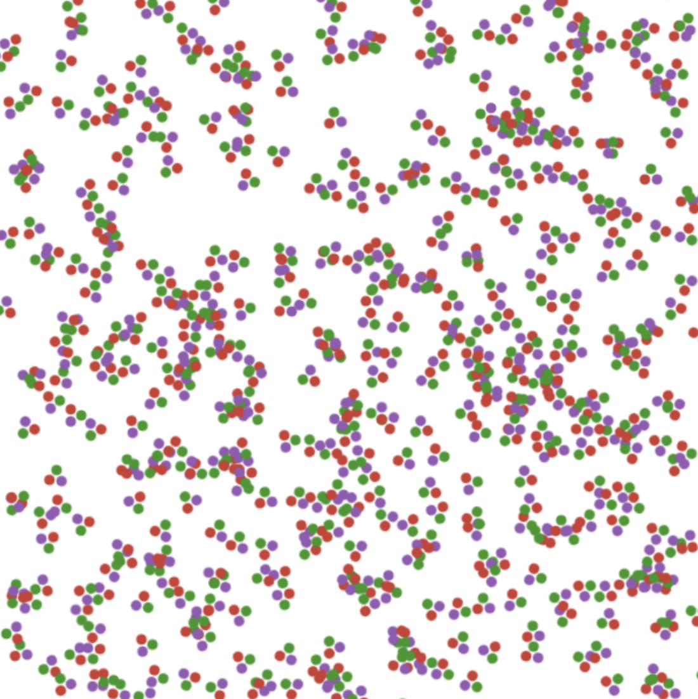
placeimage can also take in an optional argument alpha to change the opacity of the image matrix.
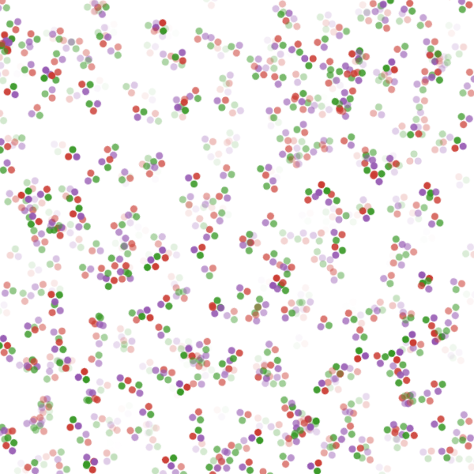
Clipping images
You can clip images. The following script repeatedly places the image using a circle to define a clipping path:
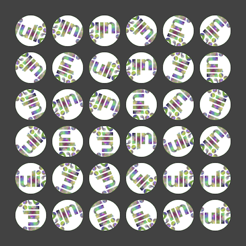
using Luxorwidth, height = 4000, 4000margin = 500fname = "test-image.pdf"Drawing(width, height, fname)origin()background("grey25")setline(5)sethue("green")image = readpng(dirname(@__FILE__) * "../assets/figures/julia-logo-mask.png")w = image.widthh = image.heightpagetiles = Tiler(width, height, 7, 9)tw = pagetiles.tilewidth/2for (pos, n) in pagetiles circle(pos, tw, :stroke) circle(pos, tw, :clip) gsave() translate(pos) scale(.95, .95) rotate(rand(0.0:π/8:2π)) placeimage(image, O, centered=true) grestore() clipreset()endfinish()Transforming images
You can transform images by setting the current matrix, either with scale and rotate and similar, or by modifying it directly. This code scales and rotates an image made in an earlier chapter of this document around in a circle:
img = readpng(dirname(dirname(pathof(Luxor))) * "/docs/src/assets/figures/textoutlines.png")w = img.widthh = img.heightfor θ in 0:π/6:2π-π/6 gsave() scale(.4, .4) rotate(θ) translate(300, 0) placeimage(img, -w/2, -h/2, 0.9) grestore()end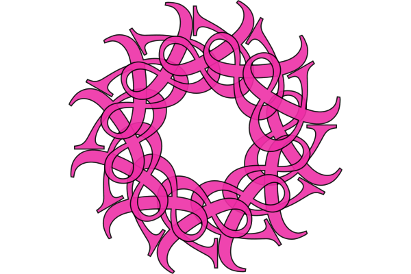
Combining images and vector graphics
You sometimes want to combine vector graphics and images, for example, to annotate them with text or vector graphics.
There are two ways you can do this:
by adding the image with
placeimage()and then drawing vector graphics on top.by opening the image as a drawing, and adding vector graphics into the image.
The things to be aware of are mostly to do with coordinates and transforms.
Adding graphics on top
In this example, we'll annotate a PNG file.
image = readpng("../assets/figures/julia-logo-mask.png")w = image.widthh = image.height# create a drawing surface of the same sizefname = "../assets/figures/drawing_on_images.png"Drawing(w, h, fname)# place the image on the Drawing - it's positioned by its top/left cornerplaceimage(image, 0, 0)# now you can annotate the image. The (0/0) is at the top left.sethue("red")setline(1)fontsize(16)circle(Point(150, 50), 2, :fill)label("(150/50)", :NE, Point(150, 50), leader=true, offset=25)arrow(Point(w/2, 90), Point(0, 90))arrow(Point(w/2, 90), Point(w, 90))text("width $w", Point(w/2, 70), halign=:center)# to divide up the image into rectangular areas and number them,# temporarily position the axes at the center:@layer begin setline(0.5) sethue("green") fontsize(12) translate(w/2, h/2) tiles = Tiler(w, h, 8, 8, margin=0) for (pos, n) in tiles box(pos, tiles.tilewidth, tiles.tileheight, :stroke) text(string(n-1), pos, halign=:center) endend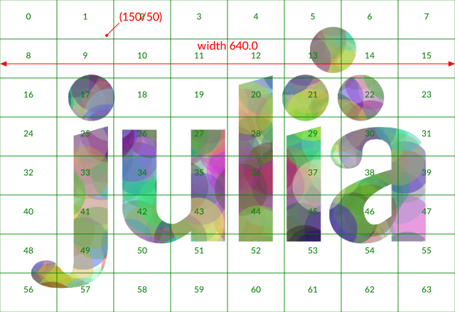
Adding text to transformed placed images
The above approach works well, but suppose you want to locate the working origin at the lower left of the image, i.e. you want all coordinates to be relative to the bottom left corner of the image?
To do this, use translate and transform to modify the drawing space:
image = readpng("../assets/figures/julia-logo-mask.png")w = image.widthh = image.heightfname = "../assets/figures/drawing_on_images_2.png"Drawing(w, h, fname)placeimage(image, 0, 0)# Move the axes to the bottom:translate(0, h)# and reflect in the x-axistransform([1 0 0 -1 0 0])# now 0/0 is at the bottom left corner, and 100/100 is up and to the right.sethue("blue")arrow(Point(200, 300), Point(160, 300))# However, don't draw text while flipped, because it will be reversed!fontsize(20)sethue("black")text("Oh no!", Point(30, 250))# To work around this, define a text function# that flips the workspace over the x-axis just for the text:function textoverlay(t, pos; kwargs...) @layer begin translate(pos) transform([1 0 0 -1 0 0]) text(t, O; kwargs...) endendtextoverlay("a tittle!", Point(200, 300), halign=:left, valign=:middle)textoverlay("0/0", O)arrow(Point(130, 400), Point(130, 340))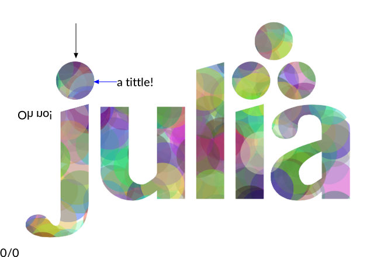
Opening the image as drawing
An alternative way to work with images is to open the image as a drawing. Let's open the well-known mandrill image in Luxor. (I'll call him Marvin, because I couldn't find out whether or not the model had a name, but I think he should have one.)
using Luxor, Colors, Images, TestImagesmarvin = testimage("mandrill")M = Luxor.Colors.ARGB32.(marvin)Drawing(M)The current drawing is now a 512 × 512 array, where each pixel is an ARGB32 (an unsigned 32-bit integer holding 4 8-bit vaalues).
Marvin's right eye (on the left side of the drawing) is located at about 60 rows down, 175 columns across. Let's fill in his pupil with a white square:
M[55:65, 170:180] .= colorant"white"MUsing M on its own should show the image in your notebook or code editor (but not the REPL). If you want to save it, using the standard Images.jl functions.
We can use these indices as x and y coordinates, since the drawing origin is also currently at the top left.
sethue("white")circle(Point(60, 175), 20, :stroke)MIf we want to draw, say, a 10 by 10 numbered grid overlay on top of Marvin, and highlight four numbered cells, it's easier to just add a transform() function that flips the x/cols and y/rows convention, then create a table centered at the center of the drawing:
fontsize(15)sethue("white")setline(1)transform([0 1 1 0 0 0])t = Table(10, 10, 512 / 10, 512 / 10, Point(512 / 2, 512 / 2))for (pos, n) in t text(string(n), pos, halign = :center, valign = :middle) box(pos, 512 / 10, 512 / 10, :stroke)endsetline(5)sethue("blue")markcells(t, getcells(t, [2, 4, 35, 69]))M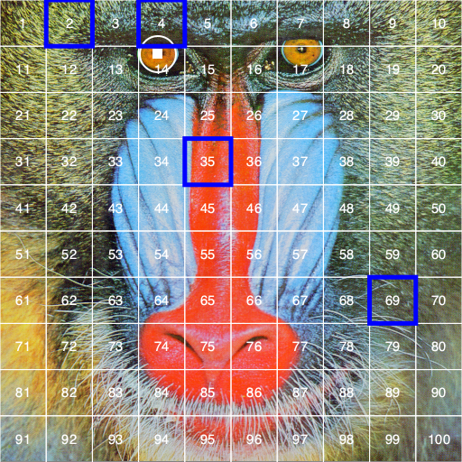
Image compositing
You should be using Images.jl for most tasks involving image editing. But if you just need to composite images together, you can use the blending modes provided by setmode.
img = readpng("../assets/figures/textoutlines.png")w = img.widthh = img.heightplaceimage(img, -w/2, -h/2, .5)setmode("saturate")translate(50, 0)placeimage(img, -w/2, -h/2, .5)